视频生成的训练高效方法
问题与思路
Zhou 等人在 MagicVideo: Efficient Video Generation With Latent Diffusion Models 中，研究怎样降低视频生成的计算成本与配对数据需求。这项工作在 2022 年首次公开；本节依据 2023 年 5 月 11 日的 arXiv v2 原文讲解。它早于前章中的多项潜空间视频模型；这里按研究路线归入“训练高效方法”，不代表它在时间上继承了前章所有工作。 #Zhou-2022-MagicVideo
它的出发点是：像素空间视频扩散既要处理大量像素，又要反复运行时空网络；如果直接使用大量三维卷积，还不容易充分复用成熟的图像生成权重。MagicVideo 因而选择在潜空间生成视频，并将共享二维卷积、逐帧分布适配器和时间注意力组合起来。 #Zhou-2022-MagicVideo
这里的“高效”包含三层含义：压缩空间网格，减少去噪计算；复用图像模型知识，降低视频学习负担；先使用无文本视频预训练，再用文本—视频对微调。它仍需要视频训练，不是训练后无需学习就能把任意图像模型变成视频模型。 #Zhou-2022-MagicVideo
生成框架
系统先生成 16 个潜空间关键帧，再用另一个网络插入中间帧，通过 VideoVAE 解码为像素视频，最后做空间超分。关键帧的基础分辨率为 \(256\times256\)，最终空间超分可到 \(1024\times1024\)。 #Zhou-2022-MagicVideo
用 \(i\) 表示视频帧，\(t\) 表示扩散时刻。把干净视频逐帧编码为 #Zhou-2022-MagicVideo
再在潜空间构造带噪状态。沿用前文统一记号，写成
这说明的是先编码干净视频、再扰动潜变量的 LDM 路线；不能把它与“先在像素空间加噪，再经非线性编码器编码”混为一谈，两者一般不等价。CLIP 编码文本，文本嵌入在 U-Net 的 cross-attention 中提供 Key/Value，视频特征提供 Query。 #Zhou-2022-MagicVideo
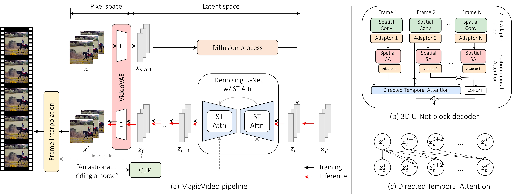
分布适配器
常见的 (2+1)D 卷积用空间二维卷积加时间一维卷积处理视频。MagicVideo 将其中的局部卷积设计进一步简化为“二维卷积＋适配器”。同一套二维卷积作用于全部帧，随后按帧、按通道缩放和平移： #Zhou-2022-MagicVideo
\(S,B\in\mathbb R^{F\times C}\) 是可学习参数，并在空间位置上广播；它们是按帧位置设置的模型参数，不是为每个视频单独训练的新权重，也不是由当前噪声临时预测的运动。 #Zhou-2022-MagicVideo
若卷积有 \(C\) 个输出通道，这种适配器只增加约 \(2FC\) 个参数。相比之下，输入输出均为 \(C\) 通道、时间核宽为 \(k\) 的普通一维卷积，权重数量约为 \(kC^2\)。这是模块层面的参数数量对比，不能直接当作整个模型的加速比。 #Zhou-2022-MagicVideo
为什么这样的简单操作有意义？图像模型的卷积已经会提取外观结构，视频微调未必需要为每帧重新学习一套卷积；适配器给共享特征留出少量逐帧调整自由度，去适应视频分布。但公式也揭示其边界：第 \(i\) 帧仍只使用本帧输入，适配器本身不读取邻帧。它不能独立完成运动建模，跨帧通信还要靠下面的时间注意力。 #Zhou-2022-MagicVideo
定向注意力
MagicVideo 在低空间分辨率的特征层中设置并行的空间、时间注意力分支。用网络层号 \(l\) 表示模块位置，可以概括为 #Zhou-2022-MagicVideo
这里的 \(l\) 不是去噪时刻：这两个分支在一次 U-Net 调用内计算。空间分支处理帧内内容，并读取文本条件；时间分支在同一空间位置聚合不同帧的特征。 #Zhou-2022-MagicVideo
对某个空间位置，把 \(F\) 帧特征组织成时间序列，计算
作者希望加入“当前帧只读取自己及此前帧”的方向约束。按这个文字意图，可以定义允许连接的掩码为
其中 \(p\) 是查询帧，\(q\) 是被读取帧。原文采用 softmax 后再乘掩码的形式： #Zhou-2022-MagicVideo
这个操作截断不允许的连接，但各行权重之和未必仍为 1。它与“先把未来位置设为负无穷、再做 softmax”的标准归一化因果注意力并不完全相同。原文把掩码写成“当 p>q 时置零，否则为一”，与其“下三角、只看过去”的文字说明存在冲突；这里明确按文字意图解释方向，不据此假定未公开实现的具体细节。 #Zhou-2022-MagicVideo
即便时间注意力只看过去，也不意味着生成流程必须先生成第一帧、再逐帧调用模型。整个潜视频仍在一次去噪中联合更新，只是特征读取受到帧顺序限制。这个设计提供顺序归纳偏置，也不等于保证物理运动正确。 #Zhou-2022-MagicVideo
训练目标与策略
论文将去噪网络记为 \(\epsilon_\theta\)，但正式训练式写的是与干净潜变量 \(Z_0\) 比较的逐帧重建损失。为避免把符号名称误当成预测目标，这里将该重建输出统一记为 \(D_\theta\)： #Zhou-2022-MagicVideo
这是对原文重建目标的记号整理，而不是额外添加一个新损失；网络输入仍包含整段带噪潜视频。若另以噪声预测参数化该输出，则
从而
所以干净潜变量重建与噪声预测可以换算，但直接改写成无权重噪声 MSE 会改变不同噪声时刻的训练权重。原文的输出命名并不完全一致，不能仅凭 \(\epsilon\) 这个字母就断言它优化的是标准无权重噪声目标。 #Zhou-2022-MagicVideo
训练分两步：
- 无文本视频预训练：用 CLIP 视觉编码器提取视频帧嵌入，作为文本条件的代理，让模型先从视频中学习动态与去噪。
- 文本—视频微调：用真实文本嵌入训练条件生成，适应推理时的文本输入。
论文使用预训练 LDM 权重初始化视频 U-Net，报告了 HD-VILA-100M 的 1000 万视频子集、WebVid-10M，以及后续自收集的 700 万文本—视频样本。无文本阶段降低的是对描述标签的依赖，不是对视频数据的依赖；它也不同于完整复用 Make-A-Video 的 unCLIP prior。MagicVideo 仍有配对微调阶段，不能假设 CLIP 的图文空间可以完全免去条件适配。 #Zhou-2022-MagicVideo
原文说明利用图像卷积权重加速训练，但没有充分说明一套严格的“只训练适配器、其余全部冻结”配置。因此，这里将它称为图像模型初始化的视频训练，不把它写成只训练少量参数的确定结论。 #Zhou-2022-MagicVideo
模型还引入 FPS 条件。若从原视频连续的 \(L_s\) 帧中均匀抽取 16 帧，原帧率为 \(f\)，则论文定义有效采样帧率 #Zhou-2022-MagicVideo
将 \(\nu\) 经正弦编码和两层线性网络得到嵌入，加到视频特征上。相同的 16 帧覆盖更长时间时，相邻采样帧的变化往往更大；把采样率告诉模型，可以减少“不同运动速度混成同一种条件”的歧义。 #Zhou-2022-MagicVideo
插帧、视频解码与超分
关键帧生成后，另行训练的潜空间插帧网络在相邻关键帧之间生成三帧。它通过两个接口读取端点：端点潜变量与带噪输入拼接；端点的 CLIP 视觉嵌入通过 cross-attention 注入。插帧 U-Net 由关键帧模型初始化。 #Zhou-2022-MagicVideo
16 个关键帧之间有 15 个间隔，每个间隔补三帧，得到
这是根据原文插帧规则得到的帧数，不是把 16 帧重复播放，也不是基础模型直接一次生成 61 帧。插帧主要提高时间采样密度，不能代替关键帧模型规划更长的动作过程。 #Zhou-2022-MagicVideo
解码也需要时间信息。逐帧图像 VAE 解码可能把相近潜变量的差异放大成细小闪烁；MagicVideo 在解码器中加入两个定向时间注意力层，形成 VideoVAE，使像素重建能够参考其他帧。它改变的是解码端，不能据此声称编码器把整段视频做了时间压缩。 #Zhou-2022-MagicVideo
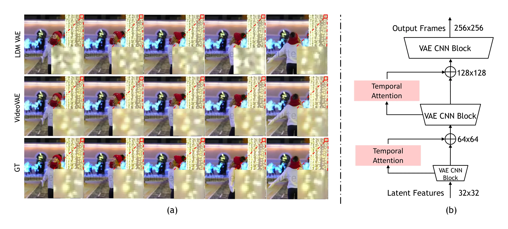
最后，单独的像素空间扩散超分模型将 \(256\times256\) 提升到 \(1024\times1024\)。超分只用图像数据训练，并在低清条件中加入随机高斯噪声、同时提供噪声强度条件，使其适应不完美的生成帧。高空间分辨率并不自动保证高时间一致性。 #Zhou-2022-MagicVideo
这条路线可概括为：抽取潜噪声 → 联合去噪得到关键帧潜变量 → 条件插帧 → VideoVAE 解码 → 图像扩散超分。原文公开材料没有完整给出采样器、步数和 CFG 参数，不能根据其 LDM 骨干补造一套具体 DDIM 配置。 #Zhou-2022-MagicVideo
实验与比较
作者在 WebVid-10M 的 5 万视频子集上做消融，以测试集 1000 个视频、每个视频 16 帧构造评估参考。下面保留论文原始消融图，以观察定向注意力、适配器和无文本预训练的逐步贡献。 #Zhou-2022-MagicVideo
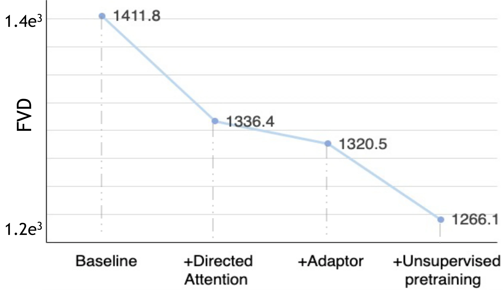
为便于查阅，将原图标出的 FVD 读数整理为下表（约值）：
| 逐步加入的设置 | FVD ↓ | 相较上一行下降 |
|---|---|---|
| 基线 | 1411.8 | — |
| + 定向时间注意力 | 1336.4 | 75.4 |
| + 分布适配器 | 1320.5 | 15.9 |
| + 无文本视频预训练 | 1266.1 | 54.4 |
这里适配器的质量增益相对有限，它的价值还包括减少相较时间卷积的局部计算、方便复用图像权重。整套收益不能都归给适配器；这组实验也没有表明它必然比任意时间卷积设计更好。消融使用较小训练集，不能把其中的 FVD 与完整训练后的主实验直接对比为同一设置。 #Zhou-2022-MagicVideo
根据原论文 Table 1 整理，保留 MSR-VTT 全部三行：
| 方法 | 零样本 | FID ↓ | FVD ↓ |
|---|---|---|---|
| NÜWA | 否 | 47.7 | — |
| CogVideo | 是 | 49.0 | 1294 |
| MagicVideo | 是 | 36.5 | 998 |
根据原论文 Table 2 整理，保留 UCF-101 全部四行：
| 方法 | 零样本 | FID ↓ | FVD ↓ |
|---|---|---|---|
| MoCoGAN-HD | 否 | — | 700 |
| CogVideo（中文） | 是 | 185 | 751 |
| CogVideo（英文） | 是 | 179 | 702 |
| MagicVideo | 是 | 145 | 655 |
两组结果说明其相较这些早期基线有进展，不表示领先于后来的全部潜空间模型。零样本指没有在目标评估数据集上专门微调，不是整个模型没有训练。FID 衡量帧分布，FVD 衡量视频特征分布；生成数量、采样帧、特征实现等协议有差异时，跨论文不能只按单个数字排名。前面 VideoFactory/PYoCo 表中引用的部分 MagicVideo 数值也不同，更应以各表各自的比较协议为边界。 #Zhou-2022-MagicVideo
最后，原论文 Table 3 在 DrawBench 的 200 条提示上比较 CogVideo。下面保留三个主观指标与生成时间；主观比例的定义是 MagicVideo 更好或持平，不是严格胜率。 #Zhou-2022-MagicVideo
| 比较项 | 原文报告 |
|---|---|
| 真实感更好或持平 | 68% |
| 文本遵循更好或持平 | 86% |
| 平滑性更好或持平 | 96% |
| MagicVideo 生成 16 帧 | 0.3 分钟 |
| CogVideo 生成 16 帧 | 21 分钟 |
表中时间相差约 70 倍，说明相对这个自回归基线，潜空间扩散路线的实用效率有吸引力。但这不是对两种模型做完整硬件、分辨率和输出配置匹配后的统一速度定理，也不能理解成生成 61 帧、\(1024\times1024\) 完整级联只用 0.3 分钟。 #Zhou-2022-MagicVideo
小结与局限
MagicVideo 的意义，是较早把潜空间生成、图像权重复用、轻量逐帧适配和时间注意力组合成视频生成系统，并进一步处理插帧与解码闪烁。相比像素空间扩散，它减少主要去噪阶段的空间计算；相比只用图像模型逐帧生成，它加入了明确的时间通信与视频训练。 #Zhou-2022-MagicVideo
其边界同样明确：逐帧适配器不建模运动对应关系，定向注意力也不等于理解物理因果；同一空间位置的跨帧注意力对大位移、遮挡等关系仍需要其他层配合。VideoVAE 缓解解码闪烁，不解决全部潜空间生成错误；图像超分也不保证新增细节跨帧一致。系统还有多个需要训练的组件、相当规模的视频数据及配对微调，因此不能把“高效”写成“训练免费”。 #Zhou-2022-MagicVideo
从本章后续方法看，还可以继续区分另一个问题：如果已经有成熟的图像扩散模型，能否进一步减少、甚至免去视频训练？下一节 Text2Video-Zero 将讨论这一条路线。 #Zhou-2022-MagicVideo
问题与思路
MagicVideo 减少了视频生成的计算成本，但仍然要用视频训练模型。Khachatryan 等人的 Text2Video-Zero 则进一步提出：能不能直接使用已经训练好的文本生成图像模型，不再进行视频训练或微调，就生成连续的视频？ 本节依据 arXiv:2303.13439 的原文讲解。 #Khachatryan-2023-Text2VideoZero
直接把同一句提示词交给 Stable Diffusion 多次，并不能得到视频：各次采样可能分别画出不同的马、不同的背景，连位置也不一致。即使使用相同噪声，只重复同一套图像生成计算，也缺少明确的运动来源。因此需要同时回答两个问题：内容为什么是同一个，位置又为什么会随时间变化？ #Khachatryan-2023-Text2VideoZero
论文给出两个互补的改动：在潜变量中人为构造运动，让不同帧有相关的生成起点；在去噪网络中让各帧读取首帧特征，稳定主体身份与外观。两项改动都发生在推理过程中，不需要学习新的视频模型参数。 #Khachatryan-2023-Text2VideoZero
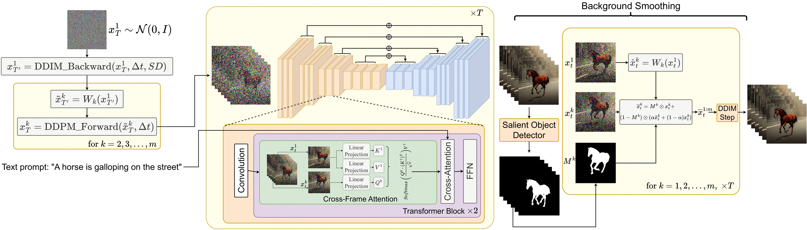
潜变量运动
先区分两个时间：上标 \(k\) 表示视频的第几帧，下标 \(t\) 表示扩散噪声级别。\(x_t^k\) 因而是第 \(k\) 帧在噪声级别 \(t\) 的潜变量，不是像素图像。 #Khachatryan-2023-Text2VideoZero
方法只先抽取首帧的高噪声潜变量：
随后用预训练 Stable Diffusion 做一小段 DDIM 去噪，到达 \(T'=T-\Delta t\)，得到 \(x_{T'}^1\)。它仍然带有大量噪声，但相比直接操作最初的高斯噪声，已经经过图像模型的整理。接着指定一个二维运动方向 \(\delta=(\delta_x,\delta_y)\)，为后续帧设置平移： #Khachatryan-2023-Text2VideoZero
其中 \(W_k\) 按 \(\delta^k\) 对潜变量作空间搬移，\(\lambda>0\) 控制幅度。每一帧都从同一个首帧中间潜变量出发，因此位置有变化，内容来源却有关联。这里的运动方向由外部指定；它不是模型从视频中学出的光流，也不能单独表达复杂的肢体运动或遮挡。 #Khachatryan-2023-Text2VideoZero
如果只搬移同一份潜变量，容易得到整张图平移的结果。论文因此对第 \(2\) 至 \(m\) 帧再执行随机的 DDPM 前向加噪，从 \(T'\) 回到 \(T\)，给后续生成留下变化空间。用前文 DDPM 的累计信号系数，可以把这段前向转移展开为 #Khachatryan-2023-Text2VideoZero
这是对 当前中间潜变量 继续加噪的条件分布，并不是重新预测干净图像。式子保留搬移后的共同成分，同时引入随机扰动；原文未明确规定不同帧的这部分噪声是否共享，不能将跨帧独立或共享当成其已披露的实现结论。首帧仍使用最初抽取的 \(x_T^1\)，不再对首帧重走这一段加噪。 #Khachatryan-2023-Text2VideoZero
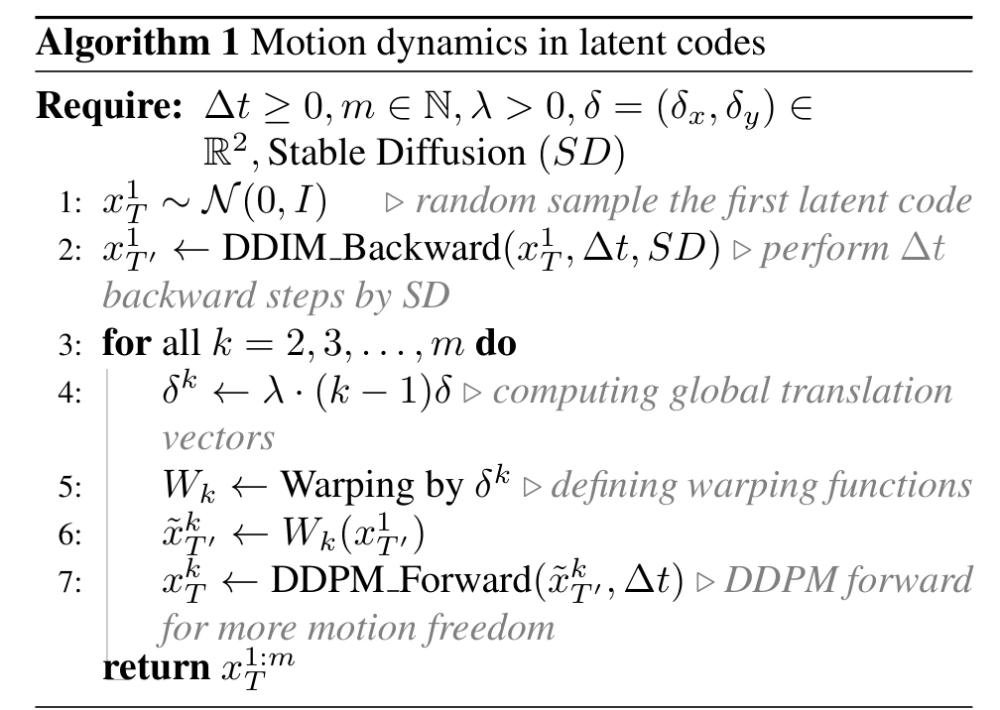
因此，这不是“所有帧共用一份噪声”，也不是“逐帧独立生成”：它构造的是经过空间搬移、又加入随机变化的相关起点。这与前面关于学习噪声搬运方向的猜想有联系，但本文采用固定规则的平移，没有训练控制搬运方向的小模型，也没有证明任意搬移后都严格保留标准高斯联合先验。 #Khachatryan-2023-Text2VideoZero
首帧跨帧注意力
关联的起点仍不足以保证去噪后主体相同。图像模型原来的 self-attention（自注意力）只在一帧内部交换信息，看不到其他帧画了什么。 #Khachatryan-2023-Text2VideoZero
设同一 U-Net 层、第 \(k\) 帧的空间特征为 \(h^k\)。沿用预训练模型的投影参数，计算 #Khachatryan-2023-Text2VideoZero
原来的逐帧自注意力为
论文将它替换为 cross-frame attention（跨帧注意力）：
这里 \(d\) 是每个注意力头的键向量维数。改变的是 Key 和 Value 的来源：第 \(k\) 帧提出查询，去首帧的空间特征中寻找对应信息。 首帧自己仍读取首帧，相当于保留其自身的自注意力。 #Khachatryan-2023-Text2VideoZero
首帧不是预先生成好、固定不变的一张干净照片。这里用的是同一个去噪时刻、同一网络层中的首帧特征，它也在随去噪更新。各帧仍有自己的 Query、潜变量和残差，因此不等于直接复制首帧像素；文本条件原有的 cross-attention 也继续保留。 #Khachatryan-2023-Text2VideoZero
这与 VideoFactory 的空间分支和时间分支之间交换信息不同：这里明确把首帧作为外观参照，也没有让每帧查询全部其他帧。参数仍是图像模型的参数，改动的是信息流向。 #Khachatryan-2023-Text2VideoZero
采样流程
准备好 \(x_T^{1:m}\) 后，模型以跨帧注意力预测各帧噪声，再执行 DDIM 反向采样。沿用本系列的记号，从噪声级别 \(t\) 到较低级别 \(s\lt t\) 的确定性更新可以写成 #Khachatryan-2023-Text2VideoZero
其中 \(c\) 是文本条件。预测现在会通过注意力参考首帧，但没有重新训练噪声预测网络。最终仍由图像 VAE 逐帧解码。新增视频机制没有对应的视频训练 loss；它复用图像模型已学到的生成能力，再用推理时的规则组织帧间关系。 #Khachatryan-2023-Text2VideoZero
论文实验使用 Stable Diffusion 1.5，主要展示 \(8\) 帧、\(512\times512\) 的视频；纯文本生成取 \(T'=881,T=941\)。这些数字是扩散噪声时间索引，不能直接解读为运行了 941 次网络。条件生成等设置使用 \(T'=T=1000\)，跳过上述短程去噪与回加噪段。 #Khachatryan-2023-Text2VideoZero
已有的 ControlNet 可以逐帧提供姿态或边缘条件，再借助跨帧注意力保持一致；DreamBooth 个性化模型也可以接入。这些模型本身已接受过训练，“免视频训练”不等于整个系统从未训练。论文还将类似改动用于 Instruct-Pix2Pix 视频编辑，但那是复用已有编辑模型的扩展，并不改变上述核心机制。 #Khachatryan-2023-Text2VideoZero
背景平滑
主体身份较稳定时，背景仍可能闪烁。论文还提供可选的 background smoothing（背景平滑）：先生成视频，对解码图像做显著目标检测，得到前景掩码 \(M^k\)，再利用搬移后的首帧潜变量平滑背景。 #Khachatryan-2023-Text2VideoZero
在去噪时刻 \(t\)，令 \(\widehat x_t^k=W_k(x_t^1)\)，则使用
前景区域保留当前帧，背景区域向首帧搬移后的背景靠拢，随后在修改的潜变量上进行 DDIM 采样。这样区分区域，是为了避免直接平均主体而抹掉真实运动。掩码来自生成结果的检测，不是预先知道的真值；这一操作涉及额外处理，不能当作零成本的单次去噪。 #Khachatryan-2023-Text2VideoZero
实验与比较
论文的主要消融图将两个核心改动分开：原始逐帧生成、只加入潜变量运动、只加入跨帧注意力，以及同时加入两者。
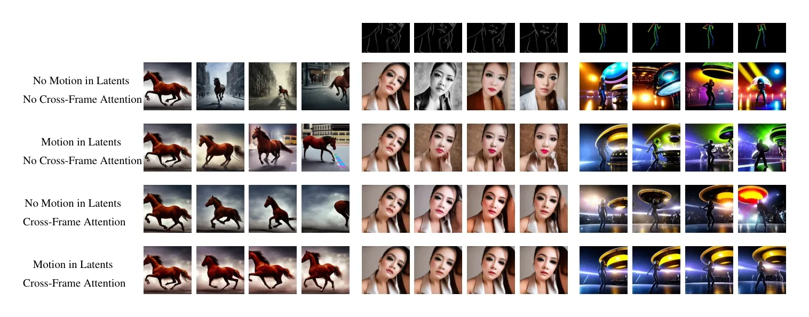
阅读这张图时，可以分别观察位置与背景是否连续，以及主体外观是否保持。作者报告：运动构造帮助维持全局布局与运动趋势，跨帧注意力更直接地稳定主体身份，两者组合取得更好的时间一致性。这是定性证据，不是定量消融分数。补充材料还展示：\(\Delta t=0\) 时容易主要表现为整体平移，适当的回加噪有助于出现主体自身的变化。 #Khachatryan-2023-Text2VideoZero
论文另从 CogVideo 生成结果中随机选择 25 个视频，使用相同提示词生成对应视频，比较 CLIP score。下表根据原文定量比较段落整理，原论文未为它单独编号为表格。 #Khachatryan-2023-Text2VideoZero
| 方法 | CLIP score ↑ |
|---|---|
| CogVideo | 29.63 |
| Text2Video-Zero | 31.19 |
这个小规模比较说明该协议下的文本对齐有竞争力。CLIP score 不直接测量运动合理性、时间稳定性或完整视频分布质量；原文也未给出方差或显著性分析，因此不能据此断言全面优于 CogVideo，更不能替它补出未报告的 FVD。 #Khachatryan-2023-Text2VideoZero
小结与局限
Text2Video-Zero 的贡献，是展示了不更新图像模型权重，也可以通过相关潜变量和首帧特征共享，得到一定程度连贯的视频。它把“让位置发生变化”与“保持内容相同”分给两个互补机制，比简单重复图像生成更有组织性。 #Khachatryan-2023-Text2VideoZero
其限制也来自这种构造：预设平移不能充分描述复杂局部运动，固定首帧参照难以处理长时间变化、大幅姿态改变和新出现的内容；背景平滑依赖检测效果。论文提出用前一段的末帧作为下一段参照来扩展长度，但参照误差可能继续累积。它没有用视频学习完整运动分布，也没有证明短视频中的一致性会自然推广到长视频。 #Khachatryan-2023-Text2VideoZero
下一节 AnimateDiff 将转向另一种取舍：保留成熟的图像生成模型，额外训练可复用的运动模块，看看有限的视频训练能够补上哪些能力。 #Khachatryan-2023-Text2VideoZero
问题与思路
Text2Video-Zero 不需要视频训练，但运动主要依赖预设的潜变量平移和首帧参照。AnimateDiff 转而问： 如果允许训练一个运动模块，能否只训练一次，就让许多已有的个性化图像模型都能生成视频，而不必为每个模型分别收集视频、重新微调？ #Guo-2023-AnimateDiff
Guo 等人在 2023 年首次公开 AnimateDiff。本节依据 2024 年 2 月 8 日的 arXiv v2，也就是 ICLR 2024 论文版本讲解，其中包含 domain adapter（域适配器）与 MotionLoRA。最初的 v1 主要提出通用运动模块，域适配器和 MotionLoRA 在这里依据的 v2 中加入。 #Guo-2023-AnimateDiff
这个问题的背景是：同一个 Stable Diffusion 基座已经衍生出大量写实、卡通、水墨等个性化模型。若视频训练大幅改变整套图像网络，它的特征空间也可能变化，学到的时间层未必还能直接接到这些模型上。AnimateDiff 因而把图像内容能力与时间变化能力尽量分开：冻结图像网络，额外学习可插拔的运动模块。 #Guo-2023-AnimateDiff
“without specific tuning”指不为每个目标个性化模型分别做视频微调，不表示没有训练。运动模块仍需要视频数据；可复用的范围主要是同一基座衍生、结构和特征兼容的模型，也不是任意生成架构之间都能互换。 #Guo-2023-AnimateDiff
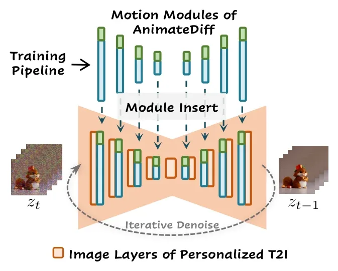
时间模块
设某层视频特征为
其中 \(B\) 是批大小，\(C\) 是通道数，\(F\) 是帧数，\(h,w\) 是特征图空间尺寸。对于图像层，将帧维并入批维： #Guo-2023-AnimateDiff
这样原有二维卷积、空间注意力和文本交叉注意力仍可逐帧工作，无须把全部二维卷积改成三维卷积。之后恢复帧维，送入新增的 temporal Transformer（时间 Transformer）。时间层则把空间位置并入批维： #Guo-2023-AnimateDiff
于是，每个空间位置都得到一条长度为 \(F\) 的特征序列。对其中一条序列记作 \(U\in\mathbb R^{F\times C}\)，加入正弦帧位置编码 \(P\)，再计算时间自注意力： #Guo-2023-AnimateDiff
这里 \(d\) 是注意力头的键维数。注意力矩阵在 帧与帧之间 建立联系；帧位置编码则告诉网络“先后顺序”，否则仅凭自注意力无法识别时间顺序。 #Guo-2023-AnimateDiff
与 Text2Video-Zero 的“每帧只读取首帧 Key/Value”不同，这里是训练得到的时间自注意力，各帧能够参考序列中的其他帧。它处理的是各层的特征，不是直接对原始像素做光流匹配；同一位置的时间注意力还要结合图像网络的空间信息传播，才能表达移动的物体。 #Guo-2023-AnimateDiff
时间 Transformer 使用残差连接，输出投影零初始化。用简化的信息流表示，
初始插入模块近似恒等映射，先保留图像模型的行为，再逐步学会加入时间信息。这里的 \(\phi\) 是运动模块参数，不是把全部图像参数重新训练。 #Guo-2023-AnimateDiff
域适配器
冻结图像网络以后，还有一个容易忽视的问题：训练视频的外观分布不等于高质量图像模型的分布。WebVid 等视频可能包含水印、压缩痕迹和运动模糊。若只允许新增运动模块改变输出，它也可能被迫承担这些静态外观差异，把“训练视频长什么样”与“它们如何运动”一起学进去。 #Guo-2023-AnimateDiff
论文因此先训练域适配器。它采用 LoRA，即 Low-Rank Adaptation（低秩适配），在原图像模型的空间自注意力与文本交叉注意力投影中加入低秩残差。以 Query 投影为例： #Guo-2023-AnimateDiff
\(A,B\) 是可训练的低秩矩阵，\(\gamma\) 控制适配器强度；这里另用 \(\gamma\)，避免与加噪系数混淆。先从视频中随机抽单帧，只训练适配器，让它吸收视频帧的外观分布。随后冻结适配器与图像网络，再训练运动模块。 #Guo-2023-AnimateDiff
推理时可以把 \(\gamma\) 降低，设为零就移除该域适配器的贡献。直觉上，训练时给外观差异安排一个独立的承载位置，推理时再减少这部分影响，让个性化模型的画风更多地保留下来。 #Guo-2023-AnimateDiff
这是一种经验上的职责分离，并非严格证明了“外观信息只存在适配器、运动信息只存在时间层”。后面的消融用于检验这种设计是否有帮助。 #Guo-2023-AnimateDiff
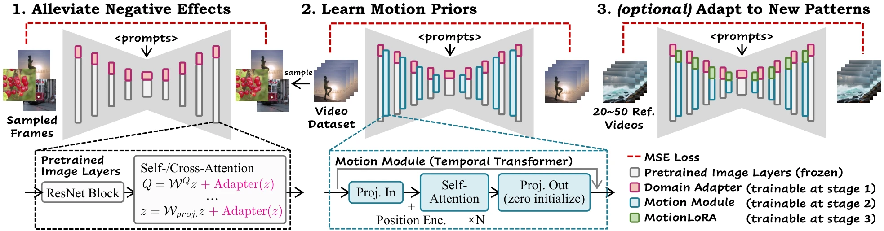
训练目标与策略
AnimateDiff 没有重新定义一条加噪路径，也没有把监督目标改为光流或显式运动轨迹。先逐帧通过预训练 VAE 编码视频，得到 \(Z_0\)，再按 DDPM 的方式加噪： #Guo-2023-AnimateDiff
同一个视频样本在这次训练中使用同一噪声级别 \(t\)，但不是全部帧加上同一份噪声图。其训练目标仍然是噪声预测均方误差： #Guo-2023-AnimateDiff
其中 \(\theta\) 表示冻结的图像模型，\(\psi\) 表示已训练并冻结的域适配器，只有运动参数 \(\phi\) 更新。网络看的是整段带噪视频，因此可以利用其他帧帮助当前帧判断内容，再预测其噪声； 学习运动的来源，是视频联合去噪任务与跨帧信息交换，而不是额外标注的速度标签。 #Guo-2023-AnimateDiff
从均方误差的条件期望性质看，最优预测倾向于逼近
这里的条件是整段视频潜变量，与逐帧条件 \(z_t^k\) 不同。真实视频中的时间关系因此能进入去噪预测；这解释了为何沿用噪声 loss 也能学习时间规律。不过，冻结主干和有限的时间模块会限制能够逼近的分布，不能据此声称已经完全恢复真实运动。 #Guo-2023-AnimateDiff
三阶段的职责可以汇总为：
| 阶段 | 数据 | 更新参数 | 主要用途 |
|---|---|---|---|
| 域适配 | 视频随机单帧 | 图像注意力中的域 LoRA | 吸收视频帧外观分布差异 |
| 运动学习 | 文本—视频片段 | 时间 Transformer | 学习可复用的时间变化规律 |
| MotionLoRA（可选） | 少量特定运动视频 | 时间注意力中的 LoRA | 适配推近、平移、旋转等运动 |
原文基于 Stable Diffusion 1.5，在 WebVid-10M 上训练运动模块。本次取得的主文将详细训练配置指向补充材料；不据此补写未核实的训练总步数、硬件成本或采样步数。 #Guo-2023-AnimateDiff
MotionLoRA
运动模块学到一般运动后，用户可能还想指定镜头推近、拉远、平移或旋转。MotionLoRA 不重新训练图像模型，也不从头训练整套运动模块，而是在运动模块的时间自注意力中加入低秩更新： #Guo-2023-AnimateDiff
注意两个 LoRA 的位置与目标不同：域适配器作用于图像模型，处理训练数据外观；MotionLoRA 作用于时间模块，学习指定运动模式。 #Guo-2023-AnimateDiff
论文用规则生成部分训练运动，例如逐帧缩小裁剪区域来构造推近效果，报告约 20–50 个参考视频、2,000 次训练迭代即可得到相应示例。这里的少量训练是已有运动模块之上的适配，不是从几十个视频训练出通用视频模型；原文的小时数也不是不依赖硬件的固定成本。 #Guo-2023-AnimateDiff
不同 MotionLoRA 权重还可以线性组合，例如把推近与旋转一起使用。这提供了经验性的运动组合能力，不保证任意运动都能线性、无干扰地组合。 #Guo-2023-AnimateDiff
采样流程
推理时，将与基座兼容的个性化图像模型扩展成逐帧处理形式，插入已训练的运动模块，按需加入 MotionLoRA，并调整或移除域适配器。随后从视频形状的高斯噪声开始迭代去噪，最后逐帧 VAE 解码。 #Guo-2023-AnimateDiff
例如沿用确定性 DDIM 从 \(t\) 到 \(s\lt t\)，则可以写成 #Guo-2023-AnimateDiff
\(\theta_*\) 是目标个性化模型；为简洁省略可选适配参数。这是用本系列记号说明如何接入采样器，不表示 AnimateDiff 的贡献是新提出该 DDIM 更新。 #Guo-2023-AnimateDiff
它可以从随机噪声生成，不必先对某段输入视频做反演；论文也展示与 ControlNet 深度序列结合，额外提供内容与布局约束。运动模块主要提供时间先验，ControlNet 提供条件约束，两者承担不同职责。 #Guo-2023-AnimateDiff
与前一节对照，区别可以概括为：
| 维度 | Text2Video-Zero | AnimateDiff |
|---|---|---|
| 视频训练 | 不需要 | 运动模块需要；之后跨兼容模型复用 |
| 运动来源 | 预设的潜变量搬移及生成模型自身变化 | 从真实视频学习的时间先验 |
| 跨帧信息 | 各帧主要读取首帧特征 | 时间自注意力交换序列特征 |
| 个性化接入 | 改动兼容图像模型的推理计算 | 接入训练好的运动模块 |
| 特定镜头 | 外部指定搬移等规则 | 可通过 MotionLoRA 进一步训练适配 |
实验与比较
原论文 Table 1 比较个性化模型动画任务。下面保留全部六项结果：前三列是 Average User Ranking（AUR，平均用户排名得分，论文规定越高越好），后三列是 CLIP 指标。Domain 表示与目标个性化图像风格或内容域的接近程度，Smooth 表示运动平滑性。 #Guo-2023-AnimateDiff
| 方法 | AUR 文本 ↑ | AUR 域相似 ↑ | AUR 平滑 ↑ | CLIP 文本 ↑ | CLIP 域相似 ↑ | CLIP 平滑 ↑ |
|---|---|---|---|---|---|---|
| Text2Video-Zero | 1.620 | 2.620 | 1.560 | 32.04 | 84.84 | 96.57 |
| Tune-a-Video | 2.180 | 1.100 | 1.615 | 35.98 | 80.68 | 97.42 |
| AnimateDiff | 2.210 | 2.280 | 2.825 | 31.39 | 87.29 | 98.00 |
来源：原论文 Table 1，按原列顺序整理。CLIP 域相似度比较动画帧与个性化图像模型生成的参考图像；主文将更详细评测实现指向补充材料，因此不擅自补写平滑指标的具体采样与聚合规则。 #Guo-2023-AnimateDiff
最清楚的优势是该协议下的平滑性，以及 CLIP 域相似度。它并没有赢下全部项目：CLIP 文本对齐低于两个对照，用户评价的域相似度低于 Text2Video-Zero。不能把“更连贯”写成“文本理解、画风保持、所有视频质量都更好”。这些得分也不能与前一节的 25 视频 CLIP 比较直接拼成排名，评测提示、模型和任务协议不同。 #Guo-2023-AnimateDiff
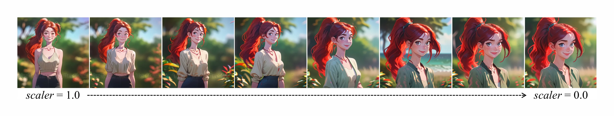
原文还比较近似参数量的时间卷积与时间 Transformer：作者报告该卷积设置容易生成近乎相同的帧，缺少运动。这个结果支持其选择时间 Transformer，但不能外推成所有时间卷积都不能建模运动。MotionLoRA 的定性消融则显示，少至 5 个参考视频时容易退化为记住纹理，约 50 个时更能学习共同运动；少样本能力也有边界。 #Guo-2023-AnimateDiff
小结与局限
AnimateDiff 的创新重点不是发明新的扩散公式，而是让视频学到的时间先验成为能够跨兼容图像模型复用的组件。逐帧冻结图像层保留原有内容能力，时间 Transformer 学习跨帧关系，域适配器减少训练视频外观的污染，MotionLoRA 再提供较轻量的运动定制。 #Guo-2023-AnimateDiff
这种分工仍不等于彻底分离内容与运动。时间层依赖图像特征，个性化改动过大可能降低兼容性；镜头运动与主体动作也可能纠缠。短片段中的平滑不等于长视频一致性，更不等于正确的物理动力学。冻结主干减少了更新参数，却没有消除视频预训练、整段视频去噪以及显存的成本。 #Guo-2023-AnimateDiff
接下来再看 DSDN 如何从网络分工的角度处理空间内容与时间变化。
问题与思路
AnimateDiff 在同一段视频潜变量上增加时间模块。Liu 等人的 Dual-Stream Diffusion Net（DSDN，双流扩散网络）则把问题进一步拆开：能不能分别生成每帧的内容和帧间的变化，再让二者在去噪过程中相互约束，减少视频闪烁？ 论文于 2023 年 8 月首次公开；本节依据 2023 年 12 月 30 日的 arXiv v3 原文。 #Liu-2023-DSDN
分别生成也有风险：内容流可能画出向左走的马，运动流却给出另一种变化。DSDN 因而不仅设计两条扩散流，还加入双向的交叉注意力，让“画什么”和“如何变化”在生成过程中不断交换信息。最后再把两类特征合起来解码。 #Liu-2023-DSDN
这里的“双流”不是两个先后运行的超分阶段，也不是两套互不相关的视频生成器。它们处理同一个视频的两种关联表示，在相同噪声级别上协同去噪。本文保留其在训练高效方法中的分类，但是否高效还要看实际更新参数、双流计算与实验依据，不能仅凭采用 LoRA 就断言整套系统更省。 #Liu-2023-DSDN
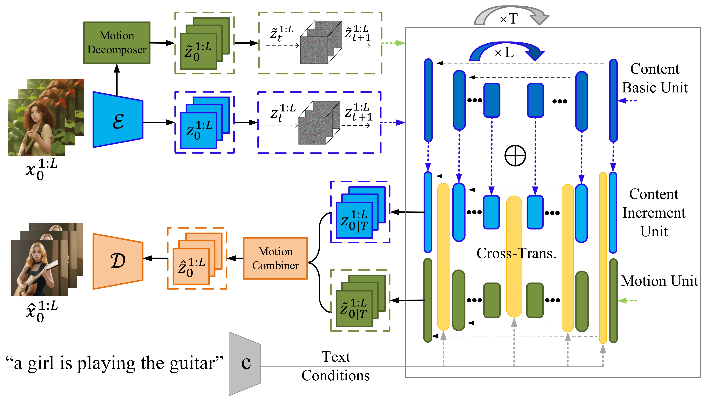
内容与运动表示
先逐帧编码视频，得到
其中 \(L\) 是视频帧数，\(C_0\) 是内容潜变量。这里改用 \(C\) 与 \(M\) 区分内容和运动，分别对应原论文的 \(z\) 与 \(\widetilde z\)。内容表示包含所有帧，并不是一张静态背景，也没有天然排除运动信息。 #Liu-2023-DSDN
随后通过 motion decomposer（运动分解器）构造运动表示。先用 \(1\times1\) 卷积减少通道，再比较相邻帧。把降维后的特征记作 \(U_0^l\)，原文的核心差分是 #Liu-2023-DSDN
其中 \(K\) 是二维逐通道卷积。再经通道恢复得到运动潜变量 \(M_0\)。原文通过末帧补齐时间长度，使它与内容流一样有 \(L\) 个时间位置。 #Liu-2023-DSDN
这个“运动”首先是特征在相邻帧之间的变化。它不是光流，没有直接告诉我们每个像素移动了多少，也不是物理速度。光照、遮挡、外观改变都可能进入特征差分；所以不能把它视为已经严格分离出来的纯运动因子。 #Liu-2023-DSDN
生成完成后，motion combiner（运动合成器）再将内容与相邻运动特征融合。省略前后的通道压缩与恢复，原文的核心形式为 #Liu-2023-DSDN
原文都用 \(conv\) 标记这些卷积，这里用下标区分两侧输入，不额外假定两侧是否共享参数。最终由解码器输出视频。它是特征融合，不是把差分沿时间求和来严格恢复原视频，也不能因此认为分解器与合成器互为数学逆运算；序列端点的完整处理规则在正文中也未展开。 #Liu-2023-DSDN
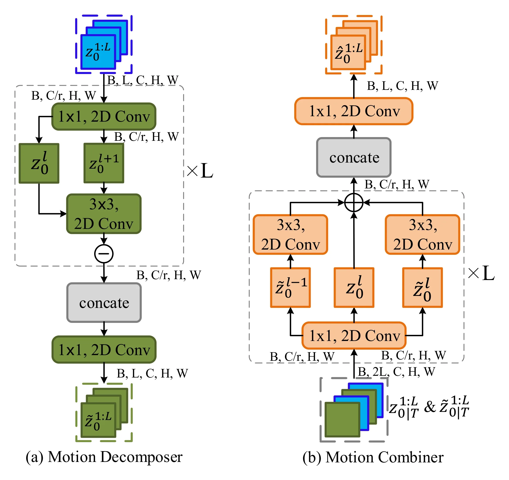
双流加噪
两条流都沿用 DDPM 高斯前向过程，共用 \(\beta_t\) 日程。令
则任意噪声级别的表示为
共用日程表示两条流以相同强度逐步加噪，不表示它们必须使用相同的噪声张量。内容与运动在干净数据中有关联，是因为 \(M_0\) 由内容特征变化构造；这份关联需要在反向去噪时学回来。 #Liu-2023-DSDN
也可以把二者看作扩展状态 \(Y_t=(C_t,M_t)\)：模型不只生成视频内容，还同时生成一份与它匹配的变化表示。它没有改变 DDPM 的基本高斯加噪原理，改变的是扩散所作用的表示与联合去噪网络。 #Liu-2023-DSDN
论文将帧编码器称为 VQ-VAE（Vector Quantized Variational Autoencoder，向量量化变分自编码器），并称使用 Stable Diffusion 1.5 的图像去噪权重。但正文未充分交代它与 SD 原有自编码器潜空间的兼容细节。这里能确定的是公式对实值潜特征添加高斯噪声，不能据“VQ”一词改写成对离散码本索引做高斯扩散，也不能反过来擅自把论文的编码器改称为 SD 默认的 KL VAE。 #Liu-2023-DSDN
双向交互
内容流称为 Personalized Content Generation Stream（PCGS，个性化内容生成流），使用图像 U-Net 作为基础单元，并用类似 LoRA 的低秩增量适配内容： #Liu-2023-DSDN
基础图像参数 \(W\) 冻结，\(A,B\) 提供可更新的低秩残差。\(\lambda\) 控制残差强度，这里不是扩散的时间步长。运动流则采用 3D U-Net，同时处理时间与空间中的运动特征。两条流都接收 CLIP 文本编码 \(c\)。 #Liu-2023-DSDN
光有两个网络还不够。DSDN 在 U-Net 卷积层后引入 cross-transformer（交叉 Transformer）交互，以另一条流的特征参与当前去噪。原文以运动到内容方向给出的注意力公式为 #Liu-2023-DSDN
\(H_M,H_C\) 是两条流的中间特征，原文将 \(d\) 称为特征维数。这个式子的具体含义是：运动特征提出查询，在内容特征中检索与它匹配的信息。 交换两条流的角色，就得到另一方向的交互。 #Liu-2023-DSDN
原文把上述输出直接记作内容特征 \(z_{con}\)，但注意力输出的位置数跟随 Query，即运动侧。这里保留其 Query/Key/Value 来源，并另命名为 \(A_{M,C}\)，避免仅凭“运动到内容”的文字标签误读信息流；完整的残差接入与布局细节应结合原图理解，不能从这一条式子推断出全部实现。 #Liu-2023-DSDN
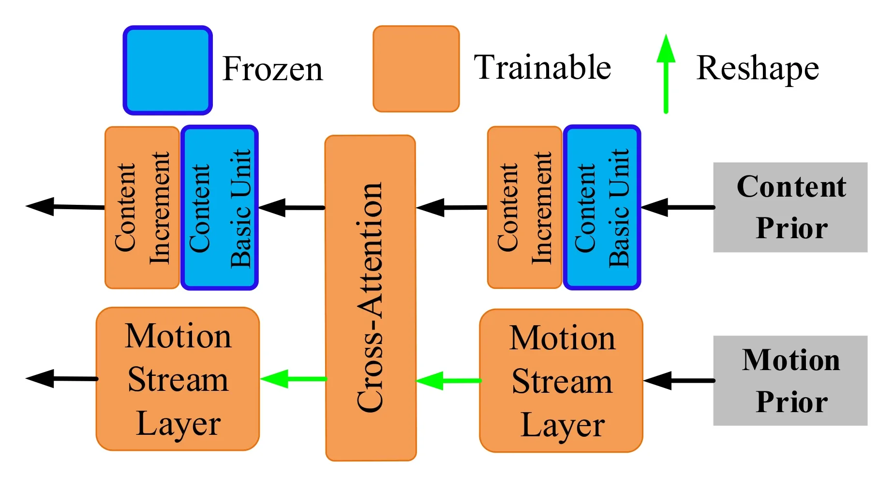
与前文几种机制对照：Text2Video-Zero 让各帧读取首帧；AnimateDiff 在同一视频状态中加入时间自注意力；DSDN 则在内容状态和运动状态之间建立交叉注意力。关键差异不只是注意力名称，而是它们分别把哪些表示连接起来。 #Liu-2023-DSDN
训练目标与策略
内容流和运动流都预测各自前向过程中加入的噪声。用上面的区分记号，将原文两个损失写为
联合优化二者，可以概括为 \(\mathcal L=\mathcal L_C+\mathcal L_M\)；正文没有给出额外的损失权重。这里把两个监督噪声分开标注，避免将原文两式中的同一个 \(\epsilon\) 字母误认为两条流共享噪声。 #Liu-2023-DSDN
内容去噪器需要利用运动表示，使每帧内容的变化相互一致；运动去噪器需要利用内容，使变化适合当前主体。运动标签来自视频特征的变化，不依赖人工光流标注；训练目标本身仍然是噪声预测。 #Liu-2023-DSDN
原文明确冻结内容基础模型，并写道只更新内容增量单元与流间交叉注意力；与此同时，它定义了运动流训练目标，并说明运动流使用图像 LDM 权重初始化。原图又将运动流层标为可训练，与上述“只更新”文字存在不一致；正文没有完整解释运动主干、分解器、合成器在各阶段的更新安排。因此不能把它整理成“整套 3D U-Net 都训练”或“所有运动组件始终冻结”的确定流程。可核实的贡献是双流表示与交互设计，其完整训练复现仍需要额外实现证据。 #Liu-2023-DSDN
论文报告的配置如下：
| 项目 | 原文说明 |
|---|---|
| 数据 | WebVid-10M 与 HD-VILA-100M 中共约 500 万视频子集 |
| 训练预处理 | 帧采样步幅 4，缩放并中心裁剪至 256×256 |
| 内容基础单元 | Stable Diffusion 1.5 预训练权重，冻结 |
| 内容增量单元 | 使用已有社区模型初始化后微调，未完整指定具体检查点 |
| 运动流 | 使用在 LAION-5B 上预训练的 LDM 权重初始化，二维到三维权重映射未展开 |
| 输出 | 16 帧，512×512 |
| 推理时间 | 单张 RTX 4090，约 35 秒生成一个视频 |
训练分辨率与生成分辨率要分别说明；上面的 35 秒也依赖其未完整报告的采样设置，不能直接用来断言比前文模型更快。
采样流程
生成时不需要先给定真实视频。两条流从各自的高噪声状态开始，在每个反向时刻读取对方当前状态：
为说明其如何接上 DDPM 反向过程，对任意一条流 \(S\in\{C,M\}\)，可以沿用标准噪声参数化的更新： #Liu-2023-DSDN
这里的条件信息已包含在 \(\widehat\epsilon_S\) 中；\(\sigma_t\) 是所选反向方差，末步通常不再注入新噪声。这是把双流预测接入前文 DDPM 公式的教学展开，原论文没有单独给出完整采样算法、采样器配置与步数，不能把这个展开当作已核实的全部运行设置。 #Liu-2023-DSDN
直到去噪结束，才把生成的内容与运动潜变量交给合成器，形成最终潜表示并解码。训练时由真实视频提取运动目标，推理时由运动流生成运动表示，二者职责不同；推理不要求先知道未来帧的真实运动。 #Liu-2023-DSDN
实验与比较
原论文 Table 1 只列出两项 CLIP 指标。下表完整保留三种方法的结果：
| 方法 | 帧一致性 ↑ | 文本对齐 ↑ |
|---|---|---|
| CogVideo | 88.32 | 22.02 |
| Text2Video-Zero | 90.21 | 29.56 |
| DSDN | 92.13 | 32.23 |
来源：根据原论文 Table 1 整理。帧一致性计算视频各帧 CLIP 图像特征之间的平均两两余弦相似度；文本对齐计算各帧与提示词的平均 CLIP 分数。 #Liu-2023-DSDN
DSDN 在该表中高于两个基线。不过，帧之间很相似不等于运动一定合理：几乎静止的视频也可能有很高的帧相似度。这项指标不能单独排除“用减少变化换一致性”的情况，需要结合动作与多样性示例观察。原文也未在此给出 FVD、统一的训练成本比较或置信区间，不能将这张表外推成全面质量与效率领先。 #Liu-2023-DSDN
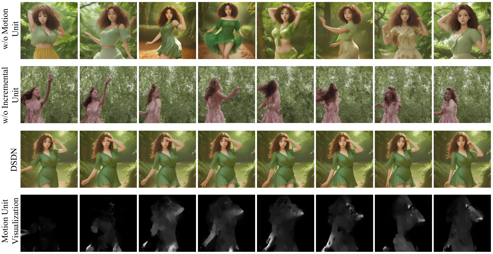
消融中，去掉运动单元后，单帧可以响应文本，但帧间联系减弱；去掉内容增量单元后，外观质量受影响。原文也指出衣服颜色容易向绿色背景靠拢等问题，说明内容与运动的交互仍可能带来不希望的纠缠。这些主要是定性证据，没有额外数值表来独立量化交叉注意力、分解器与合成器各自的收益。 #Liu-2023-DSDN
小结与局限
DSDN 的主要尝试，是将每帧内容与帧间特征变化分别作为扩散状态，再通过双向交互联合生成。它比单纯插入时间层更明确地为变化表示安排了一条生成路径，但代价也是两套状态、两条去噪流与额外融合组件。 #Liu-2023-DSDN
这条路线没有证明内容与运动已完全解耦，也不提供可解释的物理速度场或精确相机轨迹。有限的 CLIP 比较与定性消融支持其减轻闪烁的目标，却不足以确认所有模块的独立贡献或整体效率优势；训练参数与潜空间兼容说明的缺口也限制了复现判断。 #Liu-2023-DSDN
下一节 SimDA 将继续讨论，怎样用适配器在复用图像模型时控制视频训练的成本。
问题与思路
前面几篇分别尝试潜空间计算、免视频训练、可插拔运动模块，以及内容—运动双流。Xing 等人提出的 SimDA，即 Simple Diffusion Adapter（简单扩散适配器），聚焦另一种取舍：保持大部分图像模型不变，只训练很小的新增模块，能否同时适应视频外观和帧间变化？ 本节依据 arXiv:2308.09710v1（2023 年 8 月 18 日）的原始论文。 #Xing-2023-SimDA
只逐帧复用图像模型，没有时间联系；加入很大的时间网络，又会增加训练参数、显存和计算。SimDA 因而组合三个机制：空间适配器处理图像到视频的特征适配，时间适配器在低维特征上交换时间信息，Latent-Shift Attention（LSA，潜特征移位注意力）则让当前帧读取邻近帧的部分空间特征。 #Xing-2023-SimDA
它沿用同一段视频潜变量上的扩散过程，没有像 DSDN 那样另外生成一条运动潜变量，也没有改用速度或光流作为训练标签。本文所说的“高效”，首先是冻结预训练主干、减少需要更新的参数；实际训练和采样效率再由实验分别判断。 #Xing-2023-SimDA
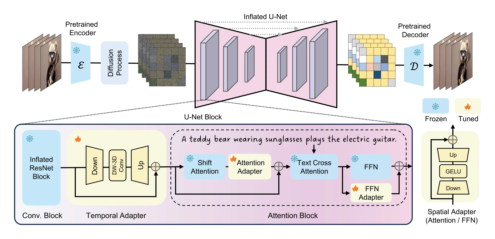
空间适配器
图像模型已经学过物体、构图和文本条件，不必为视频任务重学全部空间知识。但视频帧的外观分布与独立图像不同，完全冻结又可能限制适应能力。SimDA 因此增加 Spatial Adapter（SA，空间适配器），让主干保持冻结，只训练一个瓶颈残差分支。 #Xing-2023-SimDA
对单个 \(d\) 维特征向量 \(u\)，其结构为
先降到 \(\ell\) 维，经过非线性激活，再升回原维度并加到原特征上。忽略偏置，一个这样的分支约有 \(2d\ell\) 个参数，而不是一套新的 \(d\times d\) 主干变换。 #Xing-2023-SimDA
论文在两个位置使用空间适配器：Attention Adapter（AA，注意力适配器）作用于移位注意力之后；FFN Adapter（FA，前馈网络适配器）用于 FFN，即 Feed-Forward Network，对应的特征适配。原图显示两者的残差接法有所不同，不能理解成把所有原有层都替换掉。 #Xing-2023-SimDA
为尽量保留初始图像模型的行为，新增残差分支采用零初始化设计。原文文字将“第二个全连接层”和 \(W_{\rm down}\) 同时写在一起，与前述降维、升维顺序不一致；结构上的关键意图是让初始残差为零，具体实现不能仅据这个符号笔误判断。 #Xing-2023-SimDA
它与 LoRA 的区别也应明确：LoRA 直接给权重增加低秩更新；这里是在特征路径中增加带非线性的小网络，虽然同样采用瓶颈结构，却不是同一种参数化。 #Xing-2023-SimDA
时间适配器
Spatial Adapter 本身逐位置处理特征，不能独自建立帧间关系。Temporal Adapter（TA，时间适配器）把瓶颈内部的激活替换为 depth-wise 3D convolution（逐通道三维卷积）： #Xing-2023-SimDA
这里 \(H\) 保留视频的帧、高、宽维度，线性映射只改变通道。三维卷积因此可以同时观察相邻时间与空间位置；逐通道表示每个压缩通道分别卷积，不执行昂贵的全通道三维混合，通道混合主要交给前后投影。 #Xing-2023-SimDA
若原通道数为 \(d\)、瓶颈为 \(\ell\)，卷积核体积为 \(k\)，则其参数量可粗略记为 #Xing-2023-SimDA
相比直接使用 \(kd^2\) 规模的全通道三维卷积更小。这是结构上的参数量比较，实际运行速度还受特征尺寸、内存读写和算子实现影响。 #Xing-2023-SimDA
因此，SimDA 不是完全不使用三维运算，而是把需要学习的时间运算放进低维残差分支。原有图像 ResNet 被扩展以接收视频输入，新增时间适配器承担时间建模；不能把它误读成将全部二维卷积都换成可训练的完整三维卷积。 #Xing-2023-SimDA
移位注意力
时间卷积主要提供局部联系。SimDA 还改变空间注意力的输入，让它直接接触其他帧的内容。
普通逐帧自注意力只有当前帧的 Query、Key、Value。一种直接扩展是把所有帧的所有 token 放在一起，但 \(L\) 帧、每帧 \(N\) 个 token 时，注意力矩阵规模会达到 \((LN)\times(LN)\)。 #Xing-2023-SimDA
LSA 没有把全部邻帧依次拼进来。它按 patch 位置从不同时间帧取出特征，拼成一张仍有 \(N\) 个 token 的辅助特征图。用教学记号表示： #Xing-2023-SimDA
其中 \(p\) 是空间 token 位置，\(\delta(p)\) 为该位置选择的时间偏移。这个式子描述原图中的“不同位置取不同时间”的操作，不是论文额外学习的光流。原文示意图从当前帧及前面若干帧取样；正文称从前面的帧移入，完整偏移表与序列边界处理未在正文中展开。 #Xing-2023-SimDA
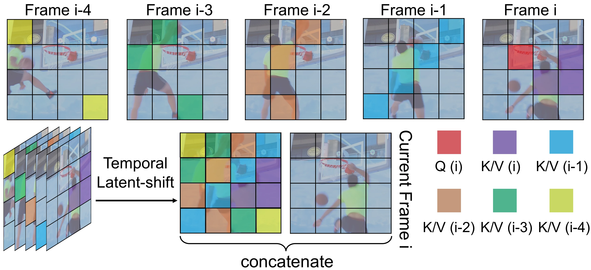
随后让当前帧提出查询，把当前帧和辅助特征图一起作为可检索内容：
分号表示沿 token 维拼接。Query 有 \(N\) 个位置，Key/Value 有 \(2N\) 个位置；每个当前 token 都能在当前帧完整特征和邻帧拼图中寻找相关信息。保留当前帧的全部 token 很重要：移位特征提供额外时间线索，而不是直接覆盖当前帧的空间内容。 #Xing-2023-SimDA
忽略通道维和投影成本，三种注意力的主要矩阵计算规模可对照为：
| 方式 | 每帧读取范围 | 视频注意力计算规模 |
|---|---|---|
| 逐帧空间自注意力 | 当前帧 N 个 token | \(O(LN^2)\) |
| 全局时空注意力 | 全部帧 LN 个 token | \(O(L^2N^2)\) |
| LSA | 当前帧 N 个＋邻帧拼图 N 个 | \(O(2LN^2)\) |
“没有新增参数”是说移位和输入路由不需要新的投影权重，不是说计算免费。与逐帧自注意力相比，其 Key/Value 长度增加；与全局时空注意力相比，才显著压低了序列规模。 #Xing-2023-SimDA
前面的 Latent-Shift 主要在卷积模块中沿时间搬移部分通道；这里搬移的是 patch/token，用来构造注意力的 Key/Value 上下文。它也不同于 Text2Video-Zero 固定读取首帧，或 AnimateDiff 沿时间维做完整的时间自注意力。 #Xing-2023-SimDA
训练与采样
先逐帧编码真实视频为潜变量 \(Z_0\)，再进行标准高斯加噪：
训练目标仍然是噪声均方误差：
\(\theta\) 表示冻结的图像模型参数，\(\phi\) 表示新增的空间、时间适配器。自编码器与原主干不更新，LSA 复用原注意力投影。冻结权重仍会参与前向计算及必要的梯度传播，不等于训练时可以完全省掉这些层。 #Xing-2023-SimDA
整个模型学习的是给定文本与带噪视频时如何联合预测噪声，没有动作标签，也没有规定某个适配器只能存放“纯动作”。时间卷积和 LSA 让去噪器能够使用帧间关系，这些关系通过视频训练进入参数。 #Xing-2023-SimDA
推理从随机视频潜噪声开始，原文采用 DDIM。沿用本系列的确定性更新记号，从 \(t\) 到 \(s\lt t\)： #Xing-2023-SimDA
也就是每一步先估计干净潜变量，再按较低噪声级别组合得到下一状态，最后解码视频。这里没有推导新的采样路径；改进主要来自去噪网络的参数高效适配与跨帧信息组织。 #Xing-2023-SimDA
原文在 WebVid-10M 上训练基础视频模型，先生成 256×256 视频，对应 32×32 的潜空间，再使用另一个模型做四倍空间超分。正文没有完整列出基础训练的总步数、学习率、批大小与推理采样步数，不能从其效果表反推出这些设置。 #Xing-2023-SimDA
超分与编辑
基础生成只输出 256×256。要得到 1024×1024，SimDA 另行适配图像 LDM 超分模型：同样增加空间与时间适配器，只训练新增部分，并把低分辨率视频逐帧与带噪高分辨率状态拼接作为条件。其目标概括为 #Xing-2023-SimDA
这里沿用原文的条件拼接思路，省略输入投影等实现细节。论文还使用噪声增强和噪声级别条件，以适应低分辨率输入的误差。超分是额外训练、额外运行的阶段，不能把基础模型的参数或耗时直接当成完整高清系统成本。 #Xing-2023-SimDA
用于视频编辑时，它参照 Tune-a-Video，对一段给定视频做少量适配。此时推理起点不再是任意随机噪声，而是对输入视频进行 DDIM inversion（反演）所得的潜变量，再改变提示词去噪，以尽量保留输入结构。 #Xing-2023-SimDA
原论文 Table 5 在 15 段 DAVIS 视频、共 75 个编辑结果的协议下，报告 SimDA 与 Tune-a-Video 的优化耗时分别为 2.5 与 9.3 分钟，训练显存分别为 28.6 与 31.3 GiB。这个数字属于单视频编辑任务，不能与基础 256×256 文生视频训练中所称的低于 8 GB 显存直接混成同一配置，更不能把几分钟编辑适配说成通用模型预训练只需几分钟。 #Xing-2023-SimDA
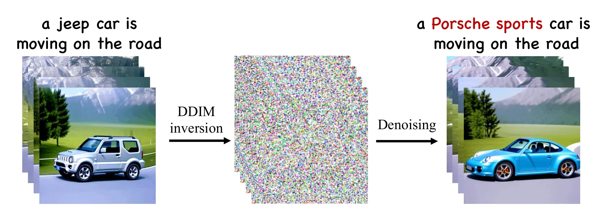
实验与比较
原论文 Table 1 比较模型规模与速度。下表只选择有速度结果的代表行，保留原表的总参数、可训练参数与秒数，参数单位为十亿（B）： #Xing-2023-SimDA
| 方法 | 总参数 B | 更新参数 B | 推理时间，秒 ↓ |
|---|---|---|---|
| CogVideo | 15.5 | 15.5 | 434.53 |
| Latent-Shift | 1.53 | 0.88 | 23.40 |
| LVDM | 1.16 | 1.04 | 21.23 |
| SimDA | 1.08 | 0.025 | 11.20 |
来源：根据原论文 Table 1 选行整理。表注明速度在单张 A100 80 GB 上测量，多数对照结果引用 Latent-Shift；正文未完整交代这些行的采样步数与输出协议如何逐项对齐。因此该表支持其在所列配置中计算较轻，不能外推为任何分辨率、采样器和输出长度下都按同一倍数加速。 #Xing-2023-SimDA
以表内数值计算，更新约 2,500 万参数，占 10.8 亿总参数约 2.3%。这说明更新量很小，运行的完整模型仍然约十亿参数。摘要中约 2,400 万的表述与这里属于近似量级；引言另有百分比与这些数量不一致，本节以明确的参数规模为准。 #Xing-2023-SimDA
质量方面，原文在 MSR-VTT 上随机为每个测试样本选一条提示词，共生成 2,990 个视频。下面根据 Table 2 选择有代表性的行；均为零样本评估，即没有针对 MSR-VTT 进行训练，不代表完全没有视频训练。 #Xing-2023-SimDA
| 方法 | 训练数据 | FVD ↓ | CLIPSIM ↑ |
|---|---|---|---|
| Make-A-Video | WebVid-10M＋HD-VILA-10M | — | 0.3049 |
| VideoFactory | WebVid-10M＋HD-VG-130M | — | 0.3005 |
| LVDM | WebVid-2M | 742 | 0.2381 |
| MagicVideo | WebVid-10M | 998 | — |
| VideoComposer | WebVid-10M | 580 | 0.2932 |
| VideoFusion | WebVid-10M | 581 | 0.2795 |
| SimDA | WebVid-10M | 456 | 0.2945 |
来源：根据原论文 Table 2 选行整理，分辨率均列为 256×256。FVD 衡量视频特征分布距离，越低越好；CLIPSIM 衡量文本与视觉的语义相似度，越高越好。各方法的训练数据、架构与引用结果协议不同，这不是只改变适配器的受控对比。 #Xing-2023-SimDA
SimDA 的 FVD 在这些已报告行中较低，但文本相似度仍低于 Make-A-Video 与 VideoFactory。它的意义更接近“在较少更新参数的条件下取得有竞争力的质量”，而非所有指标领先。 #Xing-2023-SimDA
再看 WebVid 验证集。原文使用从训练数据中排除的 4,476 对文本—视频，Table 3 完整结果如下：
| 方法 | 总参数 B | FVD ↓ | CLIPSIM ↑ |
|---|---|---|---|
| LVDM | 1.16 | 455.53 | 0.2751 |
| VideoFusion | 1.83 | 414.11 | 0.3000 |
| VideoFactory | 2.04 | 292.35 | 0.3070 |
| SimDA | 1.08 | 363.98 | 0.3054 |
来源：根据原论文 Table 3 整理。这个数据集上，SimDA 优于表内 LVDM 和 VideoFusion，但两项指标均落后于 VideoFactory。选择参数较少的模型与追求最高质量之间，仍然存在取舍。 #Xing-2023-SimDA
模块消融
在 WebVid 验证集的 1,000 个样本上，原论文 Table 6 分别移除模块，得到如下结果。SA 包含 AA 与 FA，两者分别是注意力适配器和前馈适配器： #Xing-2023-SimDA
| 设置 | FVD ↓ | CLIPSIM ↑ |
|---|---|---|
| 无 TA（时间适配器） | 1470.1 | 0.2629 |
| 无 SA（两个空间适配器均移除） | 811.3 | 0.2822 |
| 无 AA | 764.8 | 0.2851 |
| 无 FA | 623.7 | 0.2962 |
| 无 LSA（改为逐帧空间注意力） | 618.2 | 0.3011 |
| 完整 SimDA | 530.2 | 0.3034 |
来源：根据原论文 Table 6 整理，保留全部设置。这里的完整模型 FVD 为 530.2，与前面 4,476 样本的 363.98 不同，样本协议不同，不能混用。 #Xing-2023-SimDA
在该设置下，移除时间适配器造成最大退化；空间适配器也有明显作用，说明仅靠冻结图像模型和时间连接仍不足以完成最佳适配。LSA 则在已有适配器的基础上进一步改善结果。它们有相互依赖，不能把各行的 FVD 差值当成可直接相加的独立贡献。 #Xing-2023-SimDA
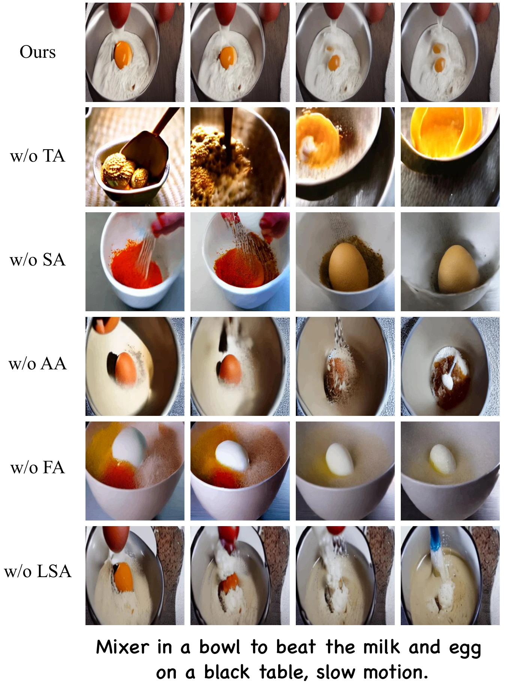
小结与局限
SimDA 的核心组合可以概括为：用瓶颈残差适应视频外观，用低维逐通道三维卷积学习局部时间关系，再用 patch 移位扩大注意力能够读取的跨帧信息。 它保留原有图像权重和扩散目标，把主要更新集中在适配器中。 #Xing-2023-SimDA
其优势是更新参数少，并在论文的若干协议下取得较好的质量与速度；限制是时间卷积与移位上下文仍有有限范围，patch 的规则搬移不是运动对齐，面对大位移、遮挡和长程身份一致性仍可能困难。文本相似度与视频质量也并非处处领先，高清生成还要承担额外超分成本。 #Xing-2023-SimDA
至此，本章的五种方法分别展示了潜空间减负、免视频训练、可复用运动模块、双流表示和适配器微调等不同取舍。下一章转向分镜与生成规划，讨论如何在底层生成器之外组织更明确的场景与时间结构。 #Xing-2023-SimDA
这五种方法提供了不同层面的复用。理解它们时，应同时记录“省去了什么”和“仍然运行、训练什么”，再看同条件下的实验是否支持效率主张。
| 方法 | 主要设计 | 仍需承担的成本与边界 |
|---|---|---|
| MagicVideo | 潜空间计算、共享二维卷积、逐帧适配与时间注意力 | 仍需视频预训练与配对微调，插帧、解码和超分另有成本 |
| Text2Video-Zero | 免视频训练，推理时搬移潜变量并共享首帧特征 | 依赖已训练图像模型；运动受规则限制，背景平滑有额外处理 |
| AnimateDiff | 冻结图像主干，学习跨兼容模型复用的运动模块 | 通用运动模块仍需视频训练，MotionLoRA还需特定运动适配 |
| DSDN | 内容与变化分别扩散，利用交互保持匹配 | 双流及融合增加计算；原文不足以确认完整训练范围或整体效率优势 |
| SimDA | 冻结主干，仅更新瓶颈空间与时间适配器 | 完整主干仍参与运行，高清超分与单视频编辑有独立成本 |
大多数方法仍沿用图像扩散的加噪与去噪训练原则，创新集中在网络信息流、可训练参数和知识复用。Text2Video-Zero则直接改变推理过程，没有新增视频训练损失。MagicVideo的重建目标可以换算为带时间权重的噪声目标，不能仅凭网络记号就把它写成无权重噪声回归。 #Zhou-2022-MagicVideo #Khachatryan-2023-Text2VideoZero #Guo-2023-AnimateDiff #Liu-2023-DSDN #Xing-2023-SimDA
这些工作仍没有消除长时序漂移、大幅位移、遮挡与物理一致性问题。更平滑的输出可能缺少运动，更少的更新参数不等于更小的运行模型；不同数据、采样器与输出规格下的秒数也不能直接比较。下一篇将转向分镜与生成规划，讨论如何在生成器之外组织场景、动作与时间结构。
参考文献
- Zhou, D. et al. MagicVideo: Efficient Video Generation With Latent Diffusion Models. 2022 首发；本节依据 2023-05-11 的 v2 原文讲解。潜空间生成、分布适配器、定向注意力、VideoVAE、Figures 2/3/7 与 Tables 1–3 来源；原文掩码及输出记号冲突在文中注明。
- Khachatryan, L. et al. Text2Video-Zero: Text-to-Image Diffusion Models are Zero-Shot Video Generators. 2023。潜变量运动构造、首帧跨帧注意力、背景平滑、Algorithm 1、Figures 2/10 与 CLIP 定量比较的来源。
- Guo, Y. et al. AnimateDiff: Animate Your Personalized Text-to-Image Diffusion Models without Specific Tuning. 2023 首发；本节依据 2024-02-08 的 v2 / ICLR 2024 版本。运动模块、域适配器、MotionLoRA、Figures 2/3/6 与 Table 1 来源；v1 与 v2 的机制边界单独注明。
- Liu, B. et al. Dual-Stream Diffusion Net for Text-to-Video Generation. 2023 首发；本节依据 2023-12-30 的 v3 原文。双流扩散、内容增量、交叉注意力、运动分解/合成、Figures 2/3/4/7 与 Table 1 来源；参数更新及潜空间兼容的披露缺口保留说明。
- Xing, Z., Dai, Q., Hu, H., Wu, Z. & Jiang, Y.-G. SimDA: Simple Diffusion Adapter for Efficient Video Generation. 2023。空间/时间适配器、Latent-Shift Attention、超分与编辑扩展、Figures 2/3/4/7 及 Tables 1/2/3/5/6 来源；本文以明确的参数规模计算更新比例，保留比较协议与原文初始化记号的边界。